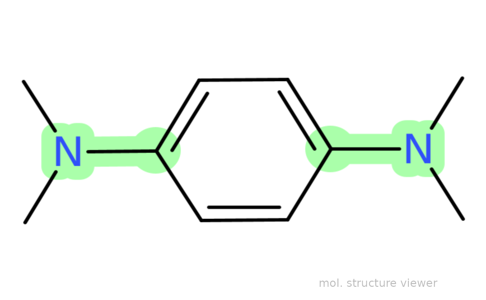

Draw Molecule by {rcdk} Defined by SMILES or SDF
Source: R/draw_molecule_by_rcdk.R
draw_molecule_by_rcdk.RdDrawing a molecular structure based on rcdk package and using SMILES or SDF input data. This function is inspired by the Edgardo Rivera-Delgado article.
Usage
draw_molecule_by_rcdk(
molecule,
type = "smiles",
mol.label = NULL,
mol.label.color = "black",
mol.label.xy.posit = c(8.2, 1.2),
sma = NULL,
annotate = "off",
style = "cow",
abbr = "off",
suppressh = TRUE,
...
)Arguments
- molecule
Character input string => either SMILES strings (in case of
type = "smiles"/type = "SMILES") or file path strings pointing to".sdf"file.- type
Character string referred to the original molecular type input => either
type = "smiles"/type = "SMILES"ortype = "sdf"/type = "SDF". Default:type = "smiles".- mol.label
Character string, pointing to name of the molecule/compound, e.g.
mol.label = c("acetone")ormol.label = c("PBN"). Ifmol.label = NULL(default) a character string "mol. structure viewer" with the gray color is shown.- mol.label.color
Character string, pointing to displayed font color of the chemical structure label. Default:
mol.label.color = "black".- mol.label.xy.posit
Numeric vector of two values, matching the \(x,y\)-position of the
mol.labelwithin the image having the total size of(1,1,10,10)=> seerasterImage. Default:mol.label.xy.posit = c(8.2,1,2)=> the label is positioned at the bottom right corner.- sma
Character string, allowing to highlight sub-structures using
SMARTS(SMILES ARbitrary Target Specification) to highlight the common substructures in a set of molecules, such assma = "C=O".- annotate
Character string, whether to display (
annotate = "number") or do not display (annotate = "off") the atomic numbers/indexes. Default:annotate = "off".- style
Character string, denoting the plotting style like =>
Plotting Style Style Text String "color on black" style = "cob""color on white" style = "cow""black on white" style = "bow""white on black" style = "wob""neon on black" style = "nob"Default:
style = "cow".- abbr
Character string, which controls how the structure is displayed. Following options can be set =>
abbr = "off"(default), pointing to present structure as is;abbr = "groups", creating an abbreviation forgroups;abbr = "reagents", creating an abbreviation forreagentsorabbr = "on"to abbreviate both. Theabbr = "groups"WORKS ONLY IFannotate = "off"!- suppressh
Logical, denoting whether to suppress displaying of the hydrogen atoms. The
SMILESorSDFSTRUCTURE MUST CONTAIN H ATOMS! Default:supressh = TRUE.- ...
additional options/arguments for the
get.depictor.
See also
Other Visualizations and Graphics:
plot_EPR_Specs(),
plot_EPR_Specs2D_interact(),
plot_EPR_Specs3D_interact(),
plot_EPR_Specs_integ(),
plot_EPR_present_interact(),
plot_labels_xyz(),
plot_layout2D_interact(),
plot_theme_In_ticks(),
plot_theme_NoY_ticks(),
plot_theme_Out_ticks(),
present_EPR_Sim_Spec()
Examples
## draw N,N,N',N'-tetramethyl-p-phenylenediamine based
## on the `smiles` code character with highlighting
## the "C(aromatic)--N" bond
draw_molecule_by_rcdk("CN(C)C1=C([H])C([H])=C(N(C)C)C([H])=C1[H]",
type = "smiles",
sma = "cN")

#
## draw N,N,N',N'-tetramethyl-p-phenylenediamine (TMPD) radical
## cation based on the `smiles` code character, with hydrogen atoms
## and molecule name label = "TMPD^(+.)"
draw_molecule_by_rcdk("CN(C)[C+]1C([H])=C([H])[C.]([N](C)C)C([H])=C1[H]",
type = "smiles",
mol.label = expression(TMPD^+.),
mol.label.color = "blue",
suppressh = FALSE)
 #
## draw N,N,N',N'-tetramethyl-p-phenylenediamine based
## on the `sdf` file path ("TMPD.sdf") with "color on black"
## style + atom numbering
draw_molecule_by_rcdk(molecule = load_data_example("TMPD.sdf"),
type = "sdf",
annotate = "number",
style = "cob")
#
## draw N,N,N',N'-tetramethyl-p-phenylenediamine based
## on the `sdf` file path ("TMPD.sdf") with "color on black"
## style + atom numbering
draw_molecule_by_rcdk(molecule = load_data_example("TMPD.sdf"),
type = "sdf",
annotate = "number",
style = "cob")